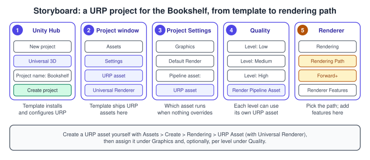
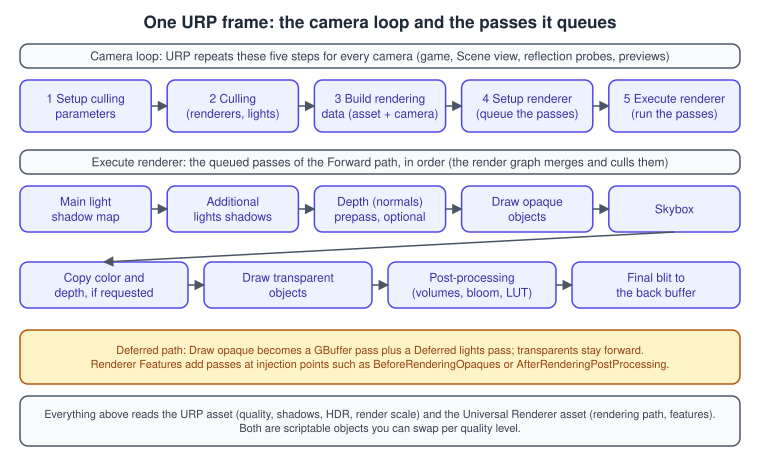
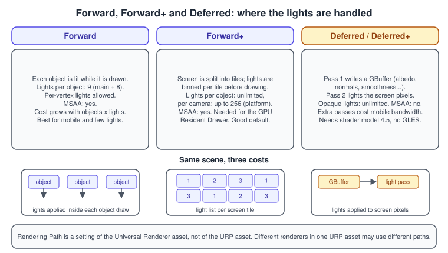
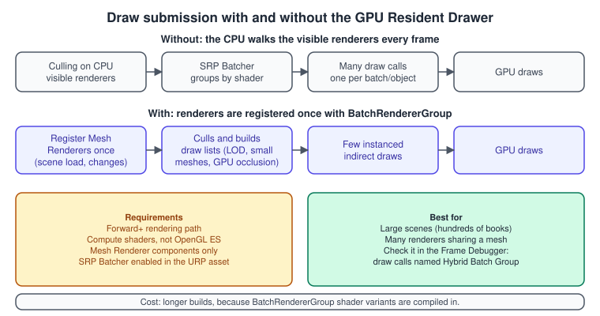
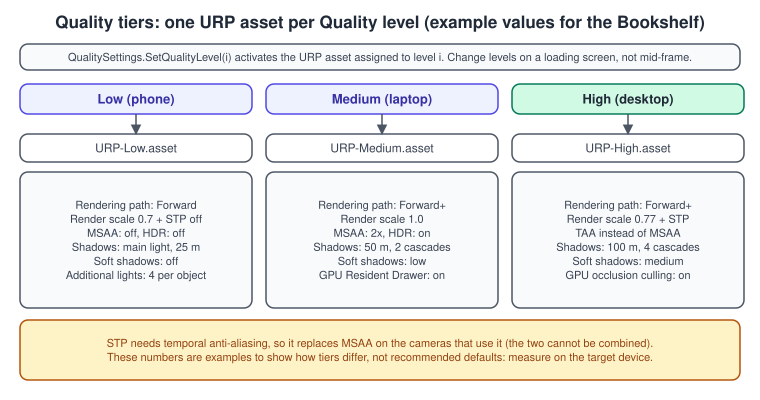

URP in Depth
|
This content was generated with the assistance of AI and should be verified against the official documentation before being relied on in production. |
The Universal Render Pipeline (URP) is the render pipeline Unity recommends for most new projects, and the one the Bookshelf uses from the first scene. It draws the shelf, the books and the desk lamp on phones, laptops, consoles, the Web and headsets from one set of assets, and it exposes the knobs that let you trade quality for speed on each of them. This page explains where those knobs live, what each rendering path does with the lights of the lamp and the room, how Unity turns a thousand books into a handful of draw calls, how to render at a lower resolution and still look sharp, and how to switch between quality tiers from a script.
The facts were checked in November 2026. The page documents Unity 6.3 LTS (6000.3, with URP package version 17.3). Where a later release changes the picture, the text says so: Unity 6.6 (6000.6) is the latest supported release at the time of writing, and the Built-In Render Pipeline has been deprecated since Unity 6.5, which makes URP the pipeline to learn. The Bookshelf runs on every platform Unity 6.3 supports with a URP renderer; the GPU Resident Drawer needs compute shaders, the Deferred paths need shader model 4.5, and a few features need Vulkan or Metal, as noted where they appear. The shared model is bookshelf.glb. The general theory of the stages described here is in The Rendering Pipeline and Lighting and Shading Models; the choice between URP, the High Definition Render Pipeline and the Built-In Render Pipeline is on Render Pipelines Overview. Custom passes are in Render Graph and Custom Passes and materials and lights in Materials, Textures and Lighting.
What URP is and how its settings are split
URP is a Scriptable Render Pipeline (SRP): a C# program that Unity calls once per camera per frame to draw the scene. It replaced a fixed pipeline with one whose passes you can read, configure and extend. Its settings are spread over four places, and most confusion comes from looking in the wrong one.
| Where | What it controls | Typical settings |
|---|---|---|
URP asset (a |
quality and features of the whole pipeline |
HDR, MSAA, render scale and upscaling filter, shadows (distance, cascades, soft shadows), additional lights, SRP Batcher, GPU Resident Drawer, light probe system, volume profile |
Universal Renderer asset (listed in the URP asset’s Renderer List) |
how one renderer draws |
rendering path, depth priming, depth texture mode, Native RenderPass, layer masks, post-processing data, Renderer Features |
Camera component (plus |
per-camera overrides |
anti-aliasing, post-processing on or off, depth and opaque texture, which renderer to use, camera stacking |
Volumes |
post-processing and some lighting parameters, blended by camera position |
bloom, tone mapping, colour grading, vignette, depth of field |
The URP asset is a scriptable object. When you assign it in Project Settings it replaces the Built-In Render Pipeline for the whole project, and you can keep several assets and switch between them, for example one per quality level. You cannot switch between a URP asset and an HDRP asset, because the pipelines are incompatible. The URP asset lists one or more renderers, so one project can mix a full 3D renderer, a mobile renderer and a 2D renderer, and each camera chooses its renderer.
Creating and wiring the assets

The Bookshelf starts from the Universal 3D template, which already contains everything below. Do the steps by hand only when you migrate a Built-In project or add a tier.
-
In the Unity Hub, select the Projects tab, then New project, choose the Universal 3D template (an empty 3D project with URP and the 3D renderer pre-configured) and select Create project.
-
In the Project window, open the
Settingsfolder. The template creates the URP assets and the Universal Renderer asset there, and assigns them in Project Settings. -
To create another URP asset, select Assets > Create > Rendering > URP Asset (with Universal Renderer). Unity creates the asset and a renderer asset beside it.
-
Open Edit > Project Settings > Graphics and check the render pipeline asset that is assigned there. This is the asset used by every quality level that does not override it.
-
Open Edit > Project Settings > Quality, select a level and, in Rendering > Render Pipeline Asset, assign the URP asset for that level. Repeat for each level.
-
Double-click a renderer in the asset’s Renderer List to open the Universal Renderer, and set Rendering Path in the Rendering section.
Source: Unity Manual: Create a new project that uses URP, Unity Manual: Create a Universal Render Pipeline asset
Two practical notes. To find every URP asset in a project, type t:universalrenderpipelineasset in the Project window search field. And a project created in a Unity
version before 6 and upgraded may keep a Built-In pipeline in Graphics settings: assigning a URP asset there is what switches the project to URP, after which the materials must be converted
(the Render Pipeline Converter; see Materials, Textures and Lighting).
One frame of URP

For each camera URP runs a loop of five steps, shown on the top row of the figure:
-
Setup culling parameters configures how lights and shadows are culled. A custom renderer can override this.
-
Culling computes the list of visible renderers, shadow casters and lights for the camera. Camera layer cull distances change the cost.
-
Build rendering data gathers the culling output, the URP asset’s quality settings, the camera and the platform into the data the renderer needs (the camera data, the light data, the shadow data).
-
Setup renderer builds the list of render passes and queues them. This is the step a custom renderer, and every Renderer Feature, hooks into.
-
Execute renderer runs the passes. Since Unity 6 the passes are recorded into a render graph that merges and culls them before they run (see Render Graph and Custom Passes).
The passes of the Forward path, in order, are: the main light shadow map and the additional lights shadow atlas, an optional depth (and normals) prepass, the opaque objects, the skybox,
optional copies of colour and depth for effects that sample them, the transparent objects, the post-processing passes and a final blit to the back buffer. URP gives each of these a RenderPassEvent, and
those events are the injection points a Renderer Feature uses.
Injection points in order
| Event | Runs |
|---|---|
|
before any other pass of the camera; camera matrices are not set up yet |
|
around the main light and additional lights shadow passes |
|
around the depth and depth-normals prepasses |
|
around the Deferred paths' GBuffer and lighting passes |
|
around the opaque objects pass |
|
around the skybox |
|
around the transparent objects pass |
|
around the post-processing effects; the latter runs before the final blit, post-processing anti-aliasing and colour grading |
|
after every other pass |
The URP asset
The URP asset is organised in sections. The table lists the ones you change most often on the Bookshelf, with the effect and the cost.
| Setting | What it does | Cost or catch |
|---|---|---|
Depth Texture |
creates |
an extra depth copy unless a prepass already exists |
Opaque Texture |
snapshot of the scene before transparents, for refraction or frosted glass |
an extra colour copy; Opaque Downsampling reduces it |
GPU Resident Drawer |
draws Mesh Renderers with GPU instancing through |
needs Forward+ and compute shaders; longer builds |
GPU Occlusion Culling |
uses the GPU instead of the CPU to hide objects behind others |
helps scenes with much occlusion, such as a full shelf wall |
SRP Batcher |
reduces CPU cost of many materials that share one shader |
shown under advanced properties; needs SRP Batcher compatible shaders |
HDR and HDR Precision |
renders with values above 1 so bloom and tone mapping have range |
memory and bandwidth; 64 bit precision avoids banding and keeps alpha |
Anti Aliasing (MSAA) |
2x, 4x or 8x multisampling for every camera by default |
bandwidth, especially on tile-based GPUs; not available in the Deferred paths |
Render Scale and Upscaling Filter |
renders at a fraction of the screen resolution and upscales (Automatic, Bilinear, Nearest-Neighbor, FSR 1.0 or STP) |
UI stays at native resolution; STP forces temporal anti-aliasing |
Main Light and Additional Lights |
per-pixel main light, plus per-pixel, per-vertex or no extra lights, with a per-object limit |
ignored when the path is Forward+ |
Light Probe System |
Light Probe Groups (legacy) or Adaptive Probe Volumes |
Adaptive Probe Volumes take a memory budget and can stream |
Shadows |
max distance, cascade count and splits, depth and normal bias, soft shadows and their quality |
more cascades, higher resolution and soft shadows all cost GPU time; soft shadows are costly on tile-based GPUs |
Post-processing |
grading mode (HDR or LDR), LUT size, alpha processing, fast sRGB conversion |
LUT size 32 is the default balance |
Volumes |
update mode (every frame or via scripting) and the default volume profile |
updating via scripting saves CPU on mobile |
Some properties are hidden by default. Open the More (three dots) menu of the asset and select Show All Advanced Properties to see, for example, the SRP Batcher toggle, Store Actions, Mixed Lighting, Light Cookies and Conservative Enclosing Sphere.
The Universal Renderer asset
The renderer asset holds the choices that are about how a frame is drawn rather than how good it looks.
| Property | Meaning |
|---|---|
Rendering Path |
Forward, Forward+, Deferred or Deferred+ (see the next section) |
Depth Priming Mode |
skips drawing overlapping pixels by using a depth prepass: Disabled, Auto (only if a prepass already exists) or Forced; not supported with deferred paths, MSAA, or at runtime on TBDR mobile GPUs |
Depth Texture Mode |
when the scene depth is copied: after opaques, after transparents (a large bandwidth saving on mobile) or by a forced prepass |
Native RenderPass |
lets URP structure its passes as native render passes, which allows programmable blending (framebuffer fetch) in custom shaders; no effect on OpenGL ES |
Prepass Layer Mask, Opaque Layer Mask, Transparent Layer Mask |
which layers a prepass or a pass draws |
Transparent Receive Shadows |
draws shadows on transparent objects |
Intermediate Texture |
Auto uses the inputs that passes declare with |
Renderer Features |
the list of features whose passes are added to the frame |
Rendering paths
A rendering path decides where lights are evaluated. URP has four, selected per renderer with Rendering Path.

-
Forward is the default. URP lights each object in turn, and there is a limit on the lights that can affect one object: 9 real-time lights per object, with per-vertex lights allowed.
-
Forward+ divides the screen into tiles, works out which lights touch which tile and lights each object with the lights of its tile. There is no per-object limit, only a per-camera limit of up to 256 lights depending on the platform, and the main light is treated like any other (so one fewer additional light fits per camera). The Main Light, Additional Lights and Per Object Limit settings of the URP asset are ignored.
-
Deferred renders the geometry into a GBuffer and lights screen pixels afterwards, so opaque objects have no limit on lights. It needs shader model 4.5, does not run on OpenGL or OpenGL ES, does not support MSAA, stores less accurate encoded normals unless you enable Accurate G-buffer normals, and adds render passes that cost bandwidth on mobile GPUs.
-
Deferred+ (added in Unity 6.1) is Deferred with Forward+ for the transparent pass, so transparents also lose the 9-light limit.
| Feature | Forward | Forward+ | Deferred |
|---|---|---|---|
Mobile performance impact |
low |
low |
high (extra GBuffer passes) |
Real-time lights per object |
9 |
unlimited |
unlimited for opaques, 9 for transparents |
Real-time lights per camera |
up to 257, platform dependent |
up to 256, platform dependent |
up to 257, platform dependent |
Per-vertex lights |
yes |
no |
no |
MSAA |
yes |
yes |
no |
Camera stacking |
yes |
yes |
the Base Camera is deferred, Overlay Cameras are forward |
Minimum shader model |
2.0 |
2.0 |
4.5 |
The official guidance reduces to a short decision tree:
Forward+ is the default recommendation for desktop and console projects with many lights, and the Entities package documentation recommends it. For the Bookshelf, a lamp plus a few fill lights fit in Forward on a phone, while the 500-book profiling scene and the lit room use Forward+ on desktop. Avoid lights with a Subtractive or Shadowmask Lighting Mode in the Deferred path: those modes are optimised for Forward. If a shader has no deferred pass, Unity draws that object with the forward path at the end of rendering, and if the GPU cannot run the selected path Unity falls back to another one.
Source: Unity Manual: Rendering paths in URP, Unity Manual: Forward and Forward+ rendering paths in URP
The tile idea is the same one that tile-based mobile GPUs use for memory, and the same family of ideas as the clustered and tiled lighting described in Deferred and Tile Shading; Forward+ is a lighting data structure, not a hardware feature, and it works on every GPU that supports the path.
Forward+ limits and build times
The per-camera visible light limit is baked into every Lit and Complex Lit shader variant, so a large limit lengthens shader compilation and player builds. If a project never has
more than a few dozen lights in view, the limit can be lowered by embedding the URP Config package (copy com.unity.render-pipelines.universal-config from Library/PackageCache into Packages) and editing
MAX_VISIBLE_LIGHT_COUNT_DESKTOP in ShaderConfig.cs.hlsl and k_MaxVisibleLightCountDesktop in ShaderConfig.cs to the same value, for example 32. Repeat the edit after every Unity upgrade, because the embedded
copy is no longer updated by Unity.
Fewer draw calls: the SRP Batcher and the GPU Resident Drawer
Drawing many objects costs CPU time before it costs GPU time: every draw needs state set up and every material change costs. URP has two tools that remove most of that cost, and they stack.
-
The SRP Batcher keeps material data in persistent GPU buffers and issues cheap draws for objects that use the same shader variant, even if their materials differ. It speeds up the CPU side without changing the GPU work. A shader is compatible when its properties are declared in the per-material constant buffer, which the URP shaders and Shader Graph shaders are.
-
The GPU Resident Drawer automatically draws Mesh Renderer GameObjects with GPU instancing through the
BatchRendererGroupAPI. It registers the renderers once, and updates the registration when GameObjects are created or changed, so the per-frame CPU loop over renderers disappears.

To enable the GPU Resident Drawer for the Bookshelf:
-
Open Edit > Project Settings > Graphics and, in the Shader Stripping section, set BatchRendererGroup Variants to Keep All.
-
Select the active URP asset and check that SRP Batcher is enabled (show advanced properties if the toggle is hidden).
-
Set GPU Resident Drawer to Instanced Drawing.
-
Open the Universal Renderer from the Renderer List and set Rendering Path to Forward+.
The Drawer works only with Forward+, with graphics APIs and platforms that support compute shaders (not OpenGL ES) and with Mesh Renderer components; anything else falls back to normal drawing. Builds take longer
because Unity compiles the BatchRendererGroup shader variants. The benefit is largest in big scenes where many GameObjects share a mesh, such as a library of the same book mesh; it is usually smaller in the Scene and Game views
than in Play mode or a build. To verify it, look in the Frame Debugger for draw calls named Hybrid Batch Group, and in the Rendering Statistics for fewer SetPass calls and less CPU time.
With GPU Occlusion Culling on, Unity also hides objects that sit behind others on the GPU; Unity 6.6 adds a GPU Resident Drawer view to the Profiler.
A GameObject is compatible when it has a Mesh Renderer (with Light Probes not set to Use Proxy Volume), uses only static global illumination, uses a shader that supports DOTS instancing (the URP Lit shader does), does not move between two cameras rendering and does not use the MaterialPropertyBlock API or a per-instance callback such as OnRenderObject. To exclude a GameObject, add the Disallow GPU Driven Rendering component (with Apply to Children Recursively for its children); to keep a tiny prop from being culled, add Disallow Small Mesh Culling.
Source: Unity Manual: Enable the GPU Resident Drawer in URP, Unity Manual: Make a GameObject compatible with the GPU Resident Drawer, Unity Manual: Use GPU occlusion culling
Dynamic batching, which merged small meshes on the CPU, is deprecated since Unity 6.5 and should stay off. Static batching, instancing set on a material and the SRP Batcher remain valid. The performance side of these choices, with the Profiler numbers for the 500-book scene, is on Profiling and Optimization.
Render scale, FSR and STP
The Render Scale slider renders the 3D scene into a target of a fraction of the screen size and then upscales it. The UI is not scaled. The Upscaling Filter chooses how:
-
Automatic picks Nearest-Neighbor if integer scaling is possible, otherwise Bilinear.
-
Bilinear and Nearest-Neighbor use the plain hardware filters (Nearest-Neighbor does not work with post-processing enabled).
-
FidelityFX Super Resolution 1.0 is a spatial upscaler that stays active at scale 1.0, with an optional sharpness override; it needs shader model 4.5 or higher.
-
Spatial-Temporal Post-Processing (STP) is Unity’s software upscaler. It uses temporal information, so selecting it forces the camera anti-aliasing to Temporal Anti-aliasing (TAA), it stays active at scale 1.0, and it needs compute shaders (shader model 5.0) and a non-OpenGL ES platform. STP configures itself per platform: higher quality filtering and deringing on PCs and consoles, a lighter filter on mobile.
TAA cannot be combined with MSAA, which is why the "High" tier of the quality figure below drops MSAA. TAA smooths edges over several frames using a colour history buffer, and can ghost when something moves fast in front of a contrasting background, so test the animated books.
Volumes and post-processing
URP has its own integrated post-processing, driven by Volumes: a Volume component holds a Volume Profile, and the profile holds overrides such as Bloom, Tonemapping, Color Adjustments, Vignette and Depth of Field. A global volume applies everywhere; a local volume has a collider and blends in as the camera enters it, with a weight and a blend distance. The URP asset names a default profile, so a scene with no volume still has tone mapping. Post-processing is turned on per camera (Rendering > Post Processing) and per renderer (Post-processing > Enabled). The Grading Mode in the URP asset chooses whether colour grading happens before tone mapping (HDR, the film workflow) or after it (LDR). Do not install the Post Processing Version 2 package into a URP project: URP uses its own system, and the old package must be removed first.
The Bookshelf uses one global volume for tone mapping and bloom, and a second, local volume around the reading nook that warms the colour while the desk lamp is on:
using UnityEngine;
using UnityEngine.Rendering;
namespace Bookshelf.Rendering
{
/// <summary>
/// Fades a local post-processing volume in while the desk lamp is on.
/// Put it on the GameObject that has the Volume component (Is Global off,
/// a Box Collider with Is Trigger on, a profile with a warm Color Adjustments override).
/// </summary>
[RequireComponent(typeof(Volume))]
public sealed class LampVolumeBlend : MonoBehaviour
{
[SerializeField] private Light lamp;
[SerializeField, Min(0.01f)] private float fadeSeconds = 0.6f;
private Volume volume;
private void Awake()
{
volume = GetComponent<Volume>();
volume.weight = 0f;
}
private void Update()
{
// Volume.weight is the blend factor between 0 (no effect) and 1 (full effect).
float target = lamp != null && lamp.enabled ? 1f : 0f;
volume.weight = Mathf.MoveTowards(volume.weight, target, Time.deltaTime / fadeSeconds);
}
}
}The URP asset’s Volume Update Mode defaults to Every Frame, which is simple and cheap on desktop; Via Scripting lets a mobile project update volumes only when something changes.
On-tile post-processing
On a tile-based GPU (most phones and all standalone headsets) the usual post-processing chain stores the finished frame to main memory, then loads it back for each effect. On-tile post-processing applies the supported effects while the tile is still in tile memory, which saves bandwidth and power. It is a Renderer Feature that replaces the integrated post-processing, and it supports colour grading, vignette, tone mapping, dithering and film grain.
-
In Unity 6.3 it targets untethered XR: Vulkan, Unity 6.3 or newer, the integrated URP post-processing disabled, and a renderer that stays on-tile (Meta Quest, Android XR and other OpenXR runtimes).
-
Unity 6.5 extended it to all platforms, with the savings on Vulkan and Metal devices, and added the Tile-Only Mode renderer setting that validates the camera, renderer and URP asset settings and warns about, or disables, options that force extra passes.
Use it when profiling shows the post-processing passes dominating a mobile frame; skip it on desktop. The XR consequences are on XR Development.
Cameras and renderers
Each camera has a Renderer choice in its Rendering section, an index into the URP asset’s Renderer List. This is how one project can render the main view with the full 3D renderer and a small preview of a book (for the UI) with a cheaper one.
Camera stacking draws a Base Camera and then Overlay Cameras on top of it; with the Deferred path the Base Camera uses the Deferred path and the overlays use Forward. The cameras themselves, including Cinemachine, are on
Cameras and Cinemachine. From code, the extra per-camera data lives on UniversalAdditionalCameraData:
using UnityEngine;
using UnityEngine.Rendering.Universal;
namespace Bookshelf.Rendering
{
/// <summary>Applies the Bookshelf's per-camera URP choices from a script.</summary>
[RequireComponent(typeof(Camera))]
public sealed class BookshelfCameraSetup : MonoBehaviour
{
[SerializeField] private bool useTemporalAntiAliasing = true;
[SerializeField] private bool postProcessing = true;
[SerializeField] private int rendererIndex;
private void Awake()
{
// GetUniversalAdditionalCameraData adds the component if the camera lacks it.
UniversalAdditionalCameraData data = GetComponent<Camera>().GetUniversalAdditionalCameraData();
data.renderPostProcessing = postProcessing;
data.antialiasing = useTemporalAntiAliasing
? AntialiasingMode.TemporalAntiAliasing
: AntialiasingMode.SubpixelMorphologicalAntiAliasing;
data.antialiasingQuality = AntialiasingQuality.Medium;
data.SetRenderer(rendererIndex);
}
}
}Quality tiers from a script

Project Settings keep a list of quality levels, and each level can have its own URP asset. A script picks the level at start-up (for example from the graphics memory), and can then adjust a few properties of the active asset to fit the device. Only change these at moments when performance is not critical, such as a loading screen or a static menu, because the change causes a temporary but significant cost. Only properties with a setter can be changed from C#.
using UnityEngine;
using UnityEngine.Rendering;
using UnityEngine.Rendering.Universal;
namespace Bookshelf.Rendering
{
/// <summary>
/// Chooses a Quality level at start-up and then tunes the active URP asset.
/// Levels (Project Settings > Quality): 0 = High, 1 = Medium, 2 = Low,
/// each with its own URP asset assigned under Rendering > Render Pipeline Asset.
/// </summary>
public sealed class QualityTierSelector : MonoBehaviour
{
[SerializeField, Range(0.5f, 1f)] private float lowTierRenderScale = 0.7f;
private void Start()
{
SelectTier();
TuneActiveAsset();
}
private static void SelectTier()
{
int level = SystemInfo.graphicsMemorySize switch
{
<= 2048 => 2,
<= 4096 => 1,
_ => 0,
};
// true applies expensive changes (such as anti-aliasing) immediately.
QualitySettings.SetQualityLevel(level, true);
}
private void TuneActiveAsset()
{
// The cast is required: the property is typed as RenderPipelineAsset.
if (GraphicsSettings.currentRenderPipeline is not UniversalRenderPipelineAsset asset)
{
Debug.LogWarning("The active render pipeline is not URP.");
return;
}
if (QualitySettings.GetQualityLevel() == 2)
{
asset.renderScale = lowTierRenderScale;
asset.upscalingFilter = UpscalingFilterSelection.STP;
asset.msaaSampleCount = 1;
asset.shadowDistance = 25f;
}
}
}
}Source: Unity Manual: Change the active URP asset at runtime, Unity Manual: Change URP asset settings at runtime
The shape of the code is the useful part: the quality level switches whole assets (rendering path, GPU Resident Drawer and the other structural choices live in the assets), and the tuning step changes only numeric dials. Setting the filter to STP also forces TAA on the cameras that use the asset, which is why the same tier sets MSAA to 1. Enumerate your own device classes and measure rather than trusting a single memory threshold; Unity’s Adaptive Performance can also adjust some of these dials at runtime on supported devices.
Common mistakes
-
Looking for a setting on the wrong asset. Rendering Path, depth priming and Renderer Features are on the Universal Renderer; render scale, shadows and the GPU Resident Drawer are on the URP asset. A change that "does nothing" is often edited on an asset that no quality level uses.
-
Assigning the URP asset under Graphics but a different asset under Quality. The quality level’s asset overrides the Graphics default, so the one you edited may not be the active one. In Play mode, select the active asset through
GraphicsSettings.currentRenderPipelinein a script or watch which asset highlights. -
Enabling the GPU Resident Drawer with Forward. It works only with Forward+; with the wrong path it silently does nothing.
-
Using
MaterialPropertyBlockon renderers the Drawer should batch. Objects that use the API are not drawn by the Drawer; set per-material values with material instances or drive them from a shader instead. -
Expecting MSAA with Deferred or with TAA or STP. Neither combination is supported.
-
Keeping Built-In materials and shaders. They render magenta in URP. Convert them with the Render Pipeline Converter, or recreate the materials with a URP shader (Materials, Textures and Lighting).
-
Using custom shaders without the depth passes. With depth priming, a custom shader that has no
DepthOnlyandDepthNormalspasses can make opaque objects render invisible. -
Raising Render Scale above 1 for sharpness. It multiplies the GPU cost; use a sharper upscaler or anti-aliasing instead.
-
Relying on Intermediate Texture "Always". It hides a missing
ConfigureInputin a Renderer Feature at a high cost, especially on untethered XR. -
Changing quality settings every frame. Switching levels or assets recreates resources and stutters.
-
Forgetting that the UI is not scaled. A low Render Scale with a UI Toolkit or uGUI HUD in screen space keeps the HUD crisp, but a world-space canvas renders at the scaled resolution.
Performance notes
-
Choose the cheapest path that fits the light count: Forward on mobile, Forward+ on desktop with many lights. Test Deferred only where bandwidth is not the limit.
-
Turn on the GPU Resident Drawer for scenes with many renderers that share a mesh, then confirm the gain in a build, not in the Editor.
-
Use Depth Texture Mode > After Transparents on mobile to avoid switching the render target between the opaque and transparent passes, and leave the Opaque Texture off unless a shader needs it.
-
Disable what you do not use in the URP asset (additional light shadows, light cookies, soft shadows, Mixed Lighting): the matching shader variants are stripped from the build, which cuts build time and memory.
-
Prefer fewer, larger shadow cascades and a smaller maximum distance to a higher shadow resolution; soft shadows are expensive on tile-based GPUs.
-
Reduce the number of passes you add as Renderer Features. Every pass costs CPU time and, on tile-based GPUs, may break pass merging (see the Render Graph Viewer in Render Graph and Custom Passes).
-
Profile on the target device with the Frame Debugger and the Rendering Debugger; the Project Auditor gained a URP Settings Analyzer in Unity 6.6 that flags misconfigurations.
What changed recently
| When | What |
|---|---|
Before Unity 6 (2019 to 2023) |
URP replaced the Lightweight Render Pipeline; passes were written with |
Unity 6.0 (URP 17, 2024) |
the render graph system, the GPU Resident Drawer, GPU occlusion culling, STP, Alpha Processing, the camera history API, Adaptive Probe Volume streaming, an 8192 shadow resolution option and the URP documentation moved into the main Unity Manual |
Unity 6.1 |
the Deferred+ rendering path; Forward+ was already supported |
Unity 6.2 |
the Prepass Layer Mask property on the Universal Renderer |
Unity 6.3 LTS (December 2025) |
a shared render graph foundation across URP and HDRP, the Render Graph Viewer on devices, the GPU lightmapper as the default baker, Kawase and Dual bloom filters, reflection probe rotation, on-tile post-processing for untethered XR |
Unity 6.4 |
URP Compatibility Mode removed: custom passes must use the render graph |
Unity 6.5 |
the Built-In Render Pipeline is deprecated (supported through the whole 6.7 LTS lifecycle); dynamic batching deprecated; on-tile post-processing for all platforms with a Tile-Only Mode setting; the shadow resolution tier of additional lights changeable at runtime |
Unity 6.6 (September 2026) |
URP Settings Analyzer in the Project Auditor, GPU Resident Drawer data in the Profiler, reading the depth buffer from GPU memory in URP on DirectX 12 and Vulkan, and the Unity Compute Light Baker |
Where the books are outdated
| Book | Topic | Current practice |
|---|---|---|
UIA ch. 4 and 10 |
lighting and materials with the Built-In Render Pipeline, the Standard shader and the legacy Lighting window with "Auto Generate" |
URP with the Lit shader (the Built-In pipeline is deprecated since Unity 6.5), Forward+ or Deferred lights instead of per-object light limits, and lighting generated with the Generate Lighting button (new Unity 6 projects have Bake on Scene Load set to Never) |
Both books |
no render graph, no render pipeline assets |
render pipeline assets, Renderer Features and render graph passes are the way to change the frame |
See also
-
Render Pipelines Overview: URP, HDRP and the deprecated Built-In pipeline compared.
-
Render Graph and Custom Passes: writing and injecting a pass with a Scriptable Renderer Feature.
-
Materials, Textures and Lighting: the Lit material, texture import, lights and baking.
-
Shader Graph and HLSL: shaders that follow the URP conventions.
-
Profiling and Optimization: the Frame Debugger, the SRP Batcher and measuring the gain.
-
HDRP Overview: the high-fidelity pipeline, in maintenance since the 2026 strategy.
-
The Rendering Pipeline: the general stages behind the passes.
-
Lighting and Shading Models: the theory behind the Lit shader.
-
Shadows and Global Illumination: shadow maps, cascades and baked light.
-
Performance and Profiling: frame budgets and bottlenecks in general.
-
Transparency, Blending and Post-Processing: the general theory of the effects URP implements.